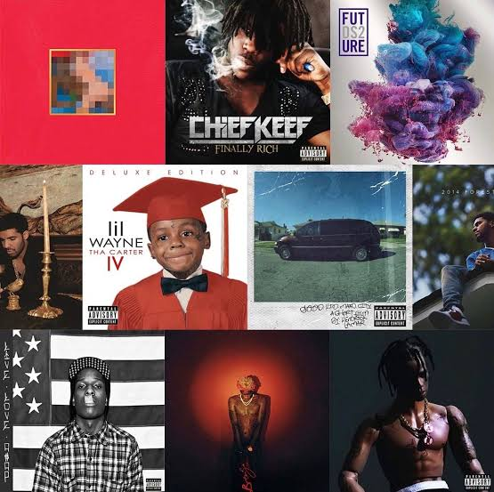

Une actualité propre à votre univers
Publié le .
Développez ici une information réellement utile.
Le rap est un mode d'expression verbal et musical caractérisé par une diction rythmée, rapide et scandée de textes poétiques, posée sur un rythme appelé beat. Principal pilier vocal de la culture hip-hop, il se distingue du chant traditionnel par l'importance accordée au débit de parole (flow), à l'art des rimes et à la transmission d'un message fort. Au cours du 21ème siècle, ce genre s'est imposé au sommet des charts mondiaux grâce à des artistes majeurs qui ont chacun excellé dans une facette précise de cette discipline: Eminem, le maître incontesté de la technique pure, de la vitesse d'élocution et de la complexité des rimes multisyllabiques. Kendrick Lamar, le génie du concept et de la narration littéraire, capable de construire des albums entiers comme de véritables œuvres cinématographiques.Lil Wayne, le roi des métaphores et des punchlines improvisées, ayant redéfini l'art des jeux de mots et influencé toute la génération moderne. Drake, le pionnier de la polyvalence mélodique, capable d'alterner et de fusionner parfaitement le rap brut et le chant avec un sens inné du succès commercial. Kanye West, le visionnaire de la production et de l'innovation artistique, réinventant continuellement les sonorités et l'esthétique musicale du genre.

Publié le .
Développez ici une information réellement utile.